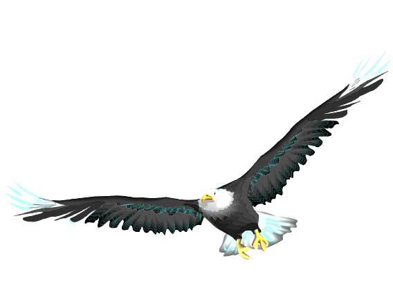
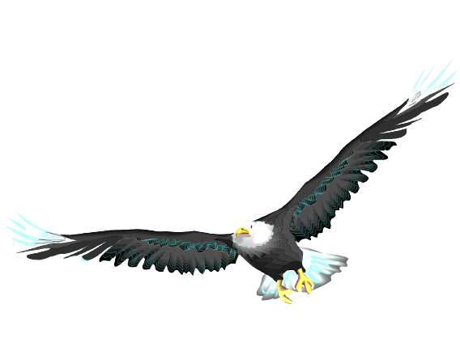

I'm Joel.
A Programmer.
“Do nothing which is of no use.” ― Miyamoto Musashi


My name is Joel Alvarado, an aspiring web developer who is building a career in solving the worlds problems.

Having built my own computer and learning the basics from various internet websites and manuals I gained the knowledge to troubleshoot hardware and use software on both apple and windows to address issues. Credible training in both HTML & CSS through the Udemy course taught by Dr. Angela Yu, I gained the basic fundamentals to begin learning programs such as Java and Swift.
As a 6 year Navy Submariner I have dealt with sensitive information requiring the utmost attention to detail and security measures to avoid spillage of classified information and the reliability to maintain a SECRET Clearance.
Normally the consequences for a bad job is loss of sales, trust or reputation. As a certified Navy Inspector in the Quality Assurance Program I oversaw jobs that would lead to the loss of lives because of failure to meet to the requirements. You can rest assured that is a skill I will carry to each project.
Do you require critical thinking and the assurance the job will be done right the first time? My services are an email away.
CONTACT ME